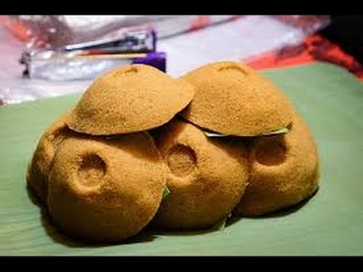

Putu Cangkir

Bahan dasar Putu Cangkir adalah beras ketan, baik ketan putih maupun ketan hitam. Ditumbuk tapi tidak sampai halus. Lalu ditambahkan serutan gula merah yang diremas bersama agar ketan gula merahnya menyatu. Bahan ketan campur gula merah ini kemudian dimasukkan ke wadah kecil model kerucut atau lebih dikenal corong minyak yang di tengahnya disisipkan parutan kelapa. Kemudian dikukus di atas kukusan khas, bentuknya tinggi bulat terbuat dari seng tipis dan di permukaan atas hanya ada satu lubang, tempat wadah corong minyak diletakkan yang di dalamnya.
Bahan-bahan:
~ 16 porsi
~ 100 gr tepung beras
~ 50 gr tepung ketan (next mau dikurangi ±20gr saja)
~ 80 gr gula merah (±3 potong gula merah kecil ukuran bola pingpong
~ 40-50 gr air
~ 1/4 sdt garam
~ Kelapa muda parut secukupnya(kukus)
Langkah:
~ Campur tepung beras + tepung ketan + garam
~ Cairkan gula merah dengan air. Tunggu sampai hangat kuku
~ Tuang ke campuran tepung. Aduk rata pakai tangan, saring yang bergerindil sampai habis.
~ Siapkan cetakan. Ambil adonan, lubangi bagian tengahnya. Masukkan kelapa parut, tutup lagi dengan adonan. Ratakan, jangan terlalu keras.
~ Tuang perlahan ke alas daun pisang sambil diketuk-ketuk biar gak pecah
~ Kukus selama 20-25menit
Sumber: cookpad.com, ksmtour.com